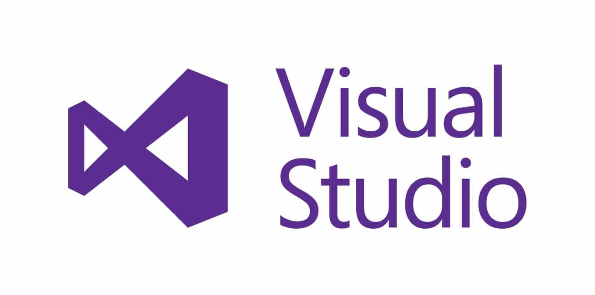
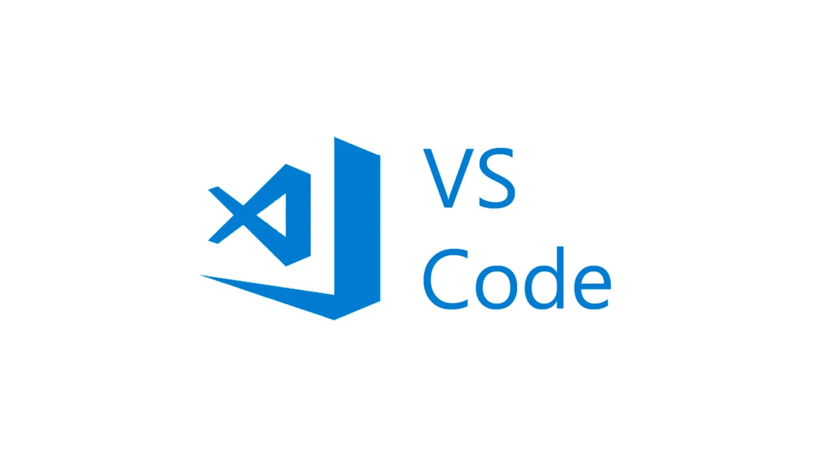
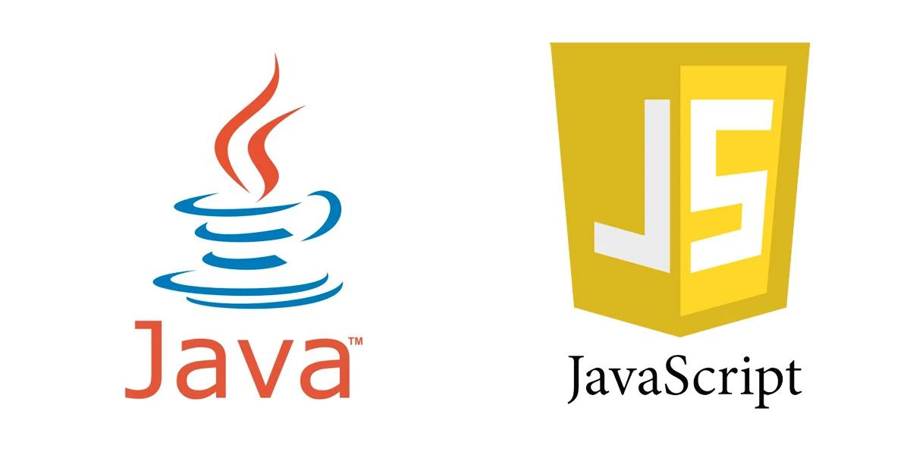
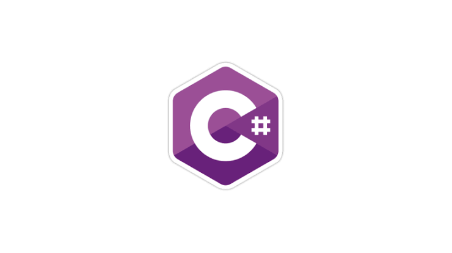

Blog
Como Aprender Programação
Para aprender a programar primeiro precisa das ferramentas certas, achar a linguagem mais fácil para você aprender e botar em prática, e da melhor e mais otimizada ferramenta de programação para aquela linguagem.
Visual Studio

O Visua Studio É uma ótima ferramenta para várias linguagens de programação utilizadas no mercado, assim como C++, C# e muitas outras. Porém, não é uma ferramenta para programar em HTML/CSS por exemplo, o Visual Studio foi feito para programar softwares e aplicativos tanto formulários como aplicativos console para desktop e/ou relacionados a algum banco de dados.
Visual Code

Essa é a ferramenta mais leve e mais otimizada para a maioria das linguagens, porém não é possível programar nada em formulário com o Visual Code. Essa é uma ferramenta feita para aplicativps web e aplicativos web e/ou de console, e nela é possível instalar extenções para outras linguagens além do html e css básicos, como a extenção para C# e C++. É uma plataforma bem aberta e bem mais leve do que o Visual Studio citado acima, fazendo dela a plataforma mais usada para codificação de aplicativos de cosnole e sites assim como esse.
Apenas um Adicional sobre as Plataformas
Citei apenas duas plataformas pois são as mais usadas para programar aplicativos e sites, eu poderia ter citado aqui uma plataforma como a Dev C++, porém nessa plataforma não é possível programar em nenhuma outra linguagem sem ser C++. Selecionei essas duas plataformas pois são as que eu tenho mais experiência e são as mais conhecidas e flexíveis na questão de linguagens e extenções. Espero que tenha ajudado!
Linguagens
As linguagens são as instruões que fazem o seu aplicativo/site funcionarem, existem centenas de linguagens por ai, mas as que vou apresentar aqui hoje são as mais conhecidas e as mais fáceis (na minha opinião) para aprender e trabalhar.
HTML/CSS

HTML é a linguagem mais simples usada para a construção de blogs e sites simples assim como esse, mas pode ser utilizada para a construção de web apps juntamente co outras linguagens e extenções que citarei logo abaixo. O CSS é apenas o complemento visual do HTML, pois vamos concordar, nenhuma empresa gostaria de ter um site todo feio e morto. Então o CSS é utilizado como estilo do site, é ele que da as cores, tamanho e formato adequado a cada elemento do site. Geralmente essas duas linguagens trabaçham juntas, mas para facilitar e dixar o site ainda mias bonito, existe o Bootstrap que é um complemento para o CSS. O Bootstrap ajuda na adaptação para diferentes telas e ajuda na implementação de animações e estilos diferentes no site.
Java Script
Essa é a linguagem mais utilizada para fazer tanto sites como aplicativos e jogos. O Jogo mais jogado do mundo por exemplo,foi programado em Java Script, assim como o aplicativo Maestro que controla Rovers em Marte foi escrito em Java. Essa é uma linguagem bem flexível que pode ser adaptada com qualquer outra linguagem por meio de plugin's assim como o J'Query que adapta a linguagem para HTML, e ajuda na implementação de animações e alguns outros atributos que só são possíveis com a linguagem Java.
C#
C# é a linguagem que os programadores geralmente utilizam para fazer softwares como aplicativos de gerenciamento de produtos, cadastro, caixa registradora e aplicativos mobile. Muitos dev's utilizam C# à demanda de empresas, um exemplo é quando uma empresa precisa de um aplicativo de log-in para registrar o horário de entrada e saída de funcionários, ou quando um fornecedor/vendedor precisa gerenciar o estoque de sua loja e dar baixa e entrada em cada produto vendido e comprado.
Conclusão
Bom, depois de uma breve explicação sobre ferramentas e linguagens de programação, acho que você ja teve uma noção mínima de como será a sua jornada nesse mundo. Tenha em mente que nenhuma linguagem é melhor que a outra, é você quem escolhe qual é a melhor para a sua área de programação e a mais fácil e prática para você aprender e trabalhar com. Espero ter ajudado aqueles que vieram buscar informação nesse blog, Muito Obrigado por ler até aqui e Boa Sorte!